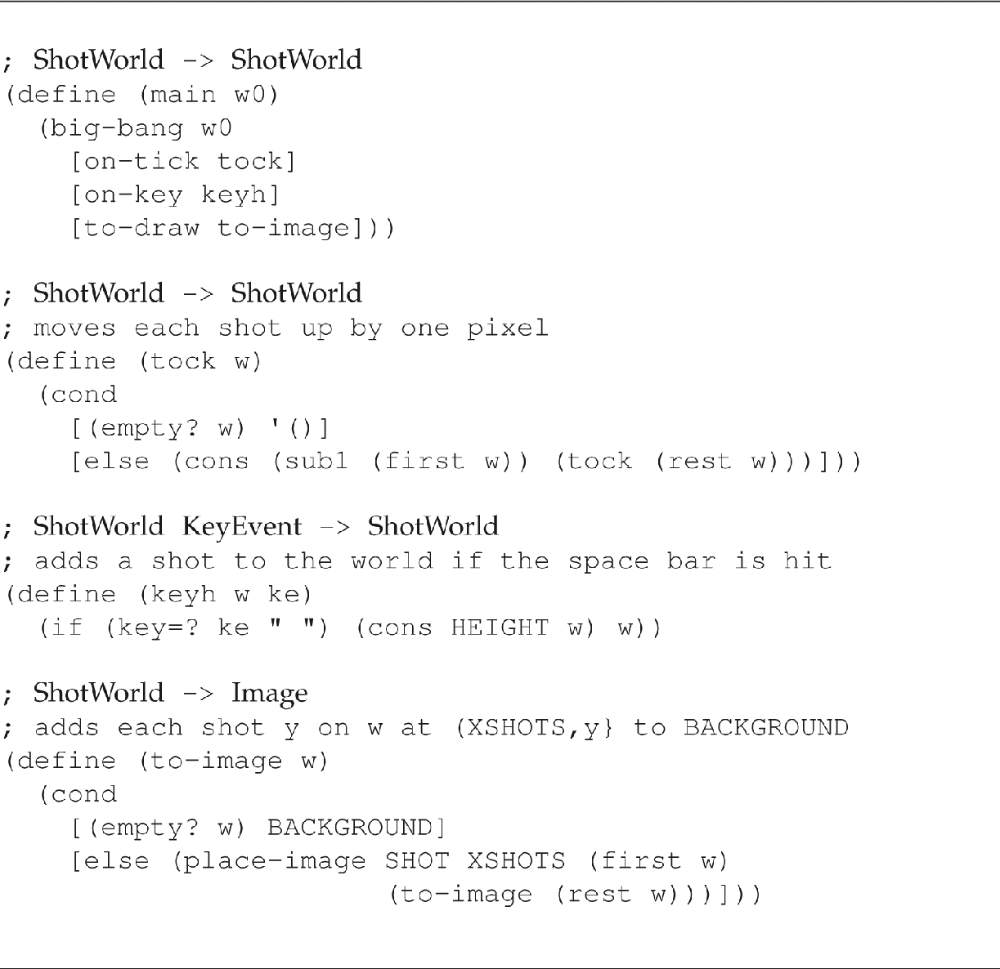
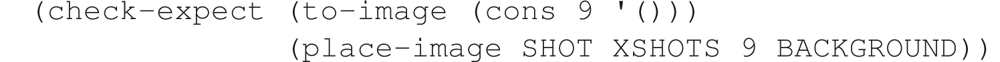
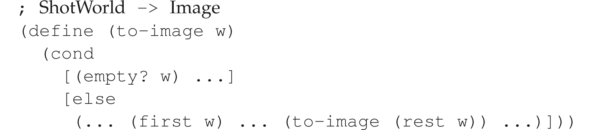
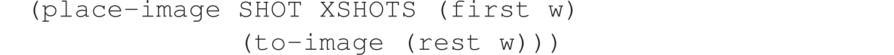
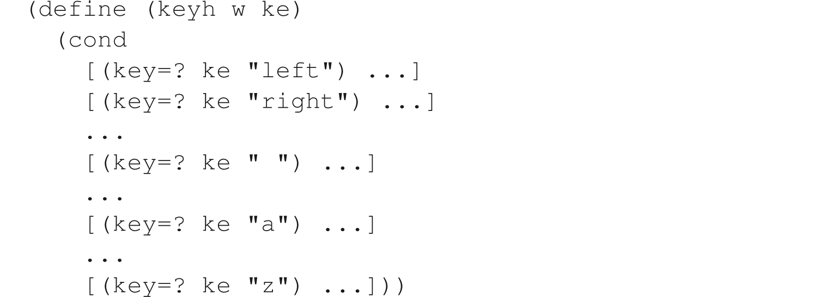

9.5 Lists and World
With lists and self-referential data definitions in general, you can design and run many more interesting world programs than with finite data. Just imagine you can now create a version of the space invader program from chapter 6 that allows the player to fire as many shots from the tank as desired. Let’s start with a simplistic version of this problem:
Sample Problem Design a world program that simulates firing shots. Every time the “player” hits the space bar, the program adds a shot to the bottom of the canvas. These shots rise vertically at the rate of one pixel per tick.
If you haven’t designed a world program in a while, reread chapter 3.6.
Designing a world program starts with a separation of information into constants and elements of the ever-changing state of the world. For the former we introduce physical and graphical constants; for the latter we need to develop a data representation for world states. While the sample problem is relatively vague about the specifics, it clearly assumes a rectangular scenery with shots painted along a vertical line. Obviously the locations of the shots change with every clock tick, but the size of the scenery and x-coordinate of the line of shots remain the same:
(define HEIGHT 80) ; distances in terms of pixels
(define WIDTH 100)
(define XSHOTS (/ WIDTH 2))
; graphical constants
(define BACKGROUND (empty-scene WIDTH HEIGHT))
(define SHOT (triangle 3 "solid" "red"))
Nothing in the problem statement demands these particular choices, but as long as they are easy to change—meaning changing by editing a single definition—we have achieved our goal.
As for those aspects of the “world” that change, the problem statement mentions two. First, hitting the space bar adds a shot. Second, all the shots move straight up by one pixel per clock tick. Given that we cannot predict how many shots the player will “fire,” we use a list to represent them:
; A List-of-shots is one of:
; -- '()
; -- (cons Shot List-of-shots)
; interpretation the collection of shots fired
The one remaining question is how to represent each individual shot. We already know that all of them have the same x-coordinate and that this coordinate stays the same throughout. Furthermore, all shots look alike. Hence, their y-coordinates are the only property in which they differ from each other. It therefore suffices to represent each shot as a number:
; A Shot is a Number.
; interpretation represents the shot's y-coordinate
We could restrict the representation of shots to the interval of numbers below HEIGHT because we know that all shots are launched from the bottom of the canvas and that they then move up, meaning their y-coordinate continuously decreases.
You can also use a data definition like this to represent this world:
; A ShotWorld is List-of-numbers.
; interpretation each number on such a list
; represents the y-coordinate of a shot
After all, the above two definitions describe all list of numbers; we already have a definition for lists of numbers, and the name ShotWorld tells everyone what this class of data is about.
Once you have defined constants and developed a data representation for the states of the world, the key task is to pick which event handlers you wish to employ and to adapt their signatures to the given problem. The running example mentions clock ticks and the space bar, all of which translates into a wish list of three functions:
• the function that turns a world state into an image:
; ShotWorld -> Image
; adds the image of a shot for each y on w
; at (MID,y} to the background image
(define (to-image w) BACKGROUND)
because the problem demands a visual rendering;
• one for dealing with tick events:
; ShotWorld -> ShotWorld
; moves each shot on w up by one pixel
(define (tock w) w)
• and one function for dealing with key events:
; ShotWorld KeyEvent -> ShotWorld
; adds a shot to the world
; if the player presses the space bar
(define (keyh w ke) w)
Don’t forget that in addition to the initial wish list, you also need to define a main function that actually sets up the world and installs the handlers. Figure 61 includes this one function that is not designed but defined as a modification of standard schema.

Figure 61: A list-based world program
Let’s start with the design of to-image. We have its signature, purpose statement, and header, so we need examples next. Since the data definition has two clauses, there should be at least two examples: '() and a consed list, say, (cons 9 '()). The expected result for '() is obviously BACKGROUND; if there is a y-coordinate, though, the function must place the image of a shot at MID and the specified coordinate:

Before you read on, work through an example that applies to-image to a list of two Shots. Doing so helps understand how the function works.
The fourth step is about translating the data definition into a template:

The template for data definitions for lists is so familiar now that it doesn’t need much explanation. If you have any doubts, read over the questions in figure 52 and design the template on your own.
From here it is straightforward to define the function. The key is to combine the examples with the template and to answer the questions from figure 53. Following those, you start with the base case of an empty list of shots, and, from the examples, you know that the expected answer is BACKGROUND. Next you formulate what the template expressions in the second cond compute:
• (first w) extracts the first coordinate from the list;
• (rest w) is the rest of the coordinates; and
• (to-image (rest w)) adds each shot on (rest w) to the background image, according to the purpose statement of to-image.
In other words, (to-image (rest w)) renders the rest of the list as an image and thus performs almost all the work. What is missing is the first shot, (first w). If you now apply the purpose statement to these two expressions, you get the desired expression for the second cond clause:

The added icon is the standard image for a shot; the two coordinates are spelled out in the purpose statement; and the last argument to place-image is the image constructed from the rest of the list.
Figure 61 displays the complete function definition for to-image and indeed the rest of the program, too. The design of tock is just like the design of to-image, and you should work through it for yourself. The signature of the keyh handler, though, poses one interesting question. It specifies that the handler consumes two inputs with nontrivial data definitions. On the one hand, the ShotWorld is a self-referential data definition. On the other hand, the definition for KeyEvents is a large enumeration. For now, we have you “guess” which of the two arguments should drive the development of the template; later we will study such cases in depth.
As far as a world program is concerned, a key handler such as keyh is about the key event that it consumes. Hence, we consider it the main argument and use its data definition to derive the template. Specifically, following the data definition for KeyEvent from chapter 4.3, it dictates that the function needs a cond expression with numerous clauses like this:

Of course, just like for functions that consume all possible BSL values, a key handler usually does not need to inspect all possible cases. For our running problem, you specifically know that the key handler reacts only to the space bar and all others are ignored. So it is natural to collapse all of the cond clauses into an else clause except for the clause for " ".
Exercise 156. Equip the program in figure 61 with tests and make sure it passes those. Explain what main does. Then run the program via main. 
Exercise 157. Experiment to determine whether the arbitrary decisions concerning constants are easy to change. For example, determine whether changing a single constant definition achieves the desired outcome:
• change the height of the canvas to 220 pixels;
• change the width of the canvas to 30 pixels;
• change the x location of the line of shots to “somewhere to the left of the middle”;
• change the background to a green rectangle; and
• change the rendering of shots to a red elongated rectangle.
Also check whether it is possible to double the size of the shot without changing anything else or to change its color to black.
Exercise 158. If you run main, press the space bar (fire a shot), and wait for a goodly amount of time, the shot disappears from the canvas. When you shut down the world canvas, however, the result is a world that still contains this invisible shot.
Design an alternative tock function that doesn’t just move shots one pixel per clock tick but also eliminates those whose coordinates place them above the canvas. Hint You may wish to consider the design of an auxiliary function for the recursive cond clause.
Exercise 159. Turn the solution of exercise 153 into a world program. Its main function, dubbed riot, consumes how many balloons the students want to throw; its visualization shows one balloon dropping after another at a rate of one per second. The function produces the list of Posns where the balloons hit.
Hints (1) Here is one possible data representation:
(define-struct pair [balloon# lob])
; A Pair is a structure (make-pair N List-of-posns)
; A List-of-posns is one of:
; -- '()
; -- (cons Posn List-of-posns)
; interpretation (make-pair n lob) means n balloons
; must yet be thrown and added to lob
(2) A big-bang expression is really just an expression. It is legitimate to nest it within another expression.
(3) Recall that random creates random numbers.